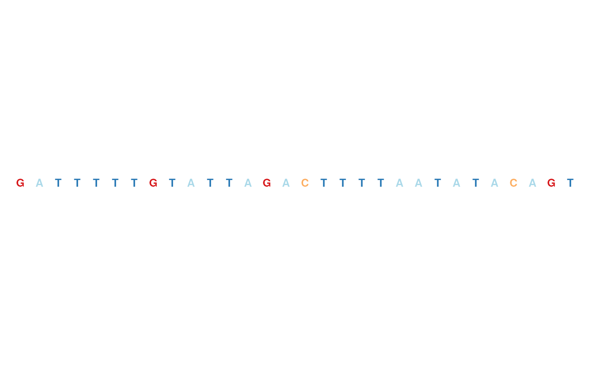
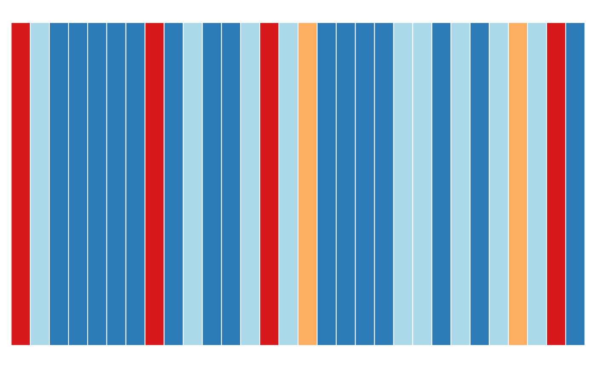
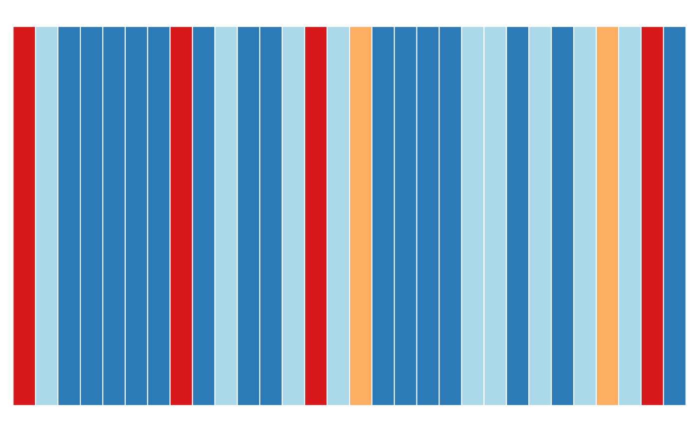

A track class to represent genomic sequences. The three child classes
SequenceDNAStringSetTrack, SequenceRNAStringSetTrack and
SequenceBSgenomeTrack do most of the work, however in practise they
are of no particular relevance to the user.
# S4 method for SequenceTrack
initialize(.Object, chromosome, genome, ...)
SequenceTrack(
sequence,
chromosome,
genome,
name = "SequenceTrack",
importFunction,
stream = FALSE,
...
)
RNASequenceTrack(
sequence,
chromosome,
genome,
name = "SequenceTrack",
importFunction,
stream = FALSE,
...
)
# S4 method for SequenceDNAStringSetTrack
initialize(.Object, sequence, ...)
# S4 method for SequenceRNAStringSetTrack
initialize(.Object, sequence, ...)
# S4 method for SequenceBSgenomeTrack
initialize(.Object, sequence = NULL, ...)
# S4 method for ReferenceSequenceTrack
initialize(.Object, stream, reference, ...)
# S4 method for SequenceTrack
seqnames(x)
# S4 method for SequenceBSgenomeTrack
seqnames(x)
# S4 method for SequenceTrack
seqlevels(x)
# S4 method for SequenceBSgenomeTrack
seqlevels(x)
# S4 method for SequenceTrack
start(x)
# S4 method for SequenceTrack
end(x)
# S4 method for SequenceTrack
width(x)
# S4 method for SequenceTrack
length(x)
# S4 method for SequenceTrack
chromosome(GdObject)
# S4 method for SequenceTrack
chromosome(GdObject) <- value
# S4 method for SequenceTrack
genome(x)
# S4 method for SequenceTrack
consolidateTrack(GdObject, chromosome, ...)
# S4 method for SequenceTrack
drawGD(GdObject, minBase, maxBase, prepare = FALSE, ...)
# S4 method for SequenceBSgenomeTrack
show(object)
# S4 method for SequenceDNAStringSetTrack
show(object)
# S4 method for SequenceRNAStringSetTrack
show(object)
# S4 method for ReferenceSequenceTrack
show(object)Arguments
- .Object
.Object
- chromosome
the currently active chromosome which may have to be set for a
RangeTrackor aSequenceTrackobject parameters- genome
The genome on which the track's ranges are defined. Usually this is a valid UCSC genome identifier, however this is not being formally checked at this point. For a
SequenceBSgenomeTrackobject, the genome information is extracted from the inputBSgenomepackage. For aDNAStringSetit has too be provided or the constructor will fall back to the default value ofNA.- ...
Additional items which will all be interpreted as further display parameters. See
settingsand the "Display Parameters" section below for details.- sequence
A meta argument to handle the different input types, making the construction of a
SequenceTrackas flexible as possible.The different input options for
sequenceare:- An object of class
DNAStringSet. The individual
DNAStrings are considered to be the different chromosome sequences.- An object of class
BSgenome. The
Gvizpackage tries to follow theBSgenomephilosophy in that the respective chromosome sequences are only realized once they are first accessed.- A
characterscalar: in this case the value of the
sequenceargument is considered to be a file path to an annotation file on disk. A range of file types are supported by theGvizpackage as identified by the file extension. See theimportFunctiondocumentation below for further details.
- An object of class
- name
Character scalar of the track's name used in the title panel when plotting.
- importFunction
A user-defined function to be used to import the sequence data from a file. This only applies when the
sequenceargument is a character string with the path to the input data file. The function needs to accept an argumentfilecontaining the file path and has to return a properDNAStringSetobject with the sequence information per chromosome. A set of default import functions is already implemented in the package for a number of different file types, and one of these defaults will be picked automatically based on the extension of the input file name. If the extension can not be mapped to any of the existing import function, an error is raised asking for a user-defined import function. Currently the following file types can be imported with the default functions:fa/fastaand2bit.Both file types support indexing by genomic coordinates, and it makes sense to only load the part of the file that is needed for plotting. To this end, the
Gvizpackage defines the derivedReferenceSequenceTrackclass, which supports streaming data from the file system. The user typically does not have to deal with this distinction but may rely on the constructor function to make the right choice as long as the default import functions are used. However, once a user-defined import function has been provided and if this function adds support for indexed files, you will have to make the constructor aware of this fact by setting thestreamargument toTRUE. Please note that in this case the import function needs to accept a second mandatory argumentselectionwhich is aGRangesobject containing the dimensions of the plotted genomic range. As before, the function has to return an appropriateDNAStringSetobject.- stream
A logical flag indicating that the user-provided import function can deal with indexed files and knows how to process the additional
selectionargument when accessing the data on disk. This causes the constructor to return aReferenceSequenceTrackobject which will grab the necessary data on the fly during each plotting operation.- reference
Name of the file (for streatming).
- x
A valid track object class name, or the object itself, in which case the class is derived directly from it.
- GdObject
the input track object
- value
Value to be set.
- minBase
Start of the sequence.
- maxBase
End of the sequence.
- prepare
logical- object
object
Value
The return value of the constructor function is a new object of class
SequenceDNAStringSetTrack, SequenceBSgenomeTrack ore
ReferenceSequenceTrack, depending on the constructor arguments.
Typically the user will not have to be troubled with this distinction and
can rely on the constructor to make the right choice.
Functions
initialize(SequenceTrack): Initialize.SequenceTrack(): ConstructorRNASequenceTrack(): ConstructorSequenceDNAStringSetTrack-class: TheDNAStringSet-based version of theSequenceTrack-class.initialize(SequenceDNAStringSetTrack): Initialize.SequenceRNAStringSetTrack-class: TheRNAStringSet-based version of theSequenceTrack-class.initialize(SequenceRNAStringSetTrack): InitializeRNAStringSet-based version of theSequenceTrack-class.SequenceBSgenomeTrack-class: TheBSgenome-based version of theSequenceTrack-class.initialize(SequenceBSgenomeTrack): Initialize.ReferenceSequenceTrack-class: The file-based version of theSequenceTrack-class.initialize(ReferenceSequenceTrack): Initialize.seqnames(SequenceTrack): return the names (i.e., the chromosome) of the sequences contained in the object.seqnames(SequenceBSgenomeTrack): return the names (i.e., the chromosome) of the sequences contained in the object.seqlevels(SequenceTrack): return the names (i.e., the chromosome) of the sequences contained in the object. Only those with length > 0.seqlevels(SequenceBSgenomeTrack): return the names (i.e., the chromosome) of the sequences contained in the object. Only those with length > 0.start(SequenceTrack): return the start coordinates of the track items.end(SequenceTrack): return the end coordinates of the track items.width(SequenceTrack): return the with of the track items in genomic coordinates.length(SequenceTrack): return the length of the sequence for active chromosome.chromosome(SequenceTrack): return the chromosome for which the track is defined.chromosome(SequenceTrack) <- value: replace the value of the track's chromosome. This has to be a valid UCSC chromosome identifier or an integer or character scalar that can be reasonably coerced into one.genome(SequenceTrack): Set the track's genome. Usually this has to be a valid UCSC identifier, however this is not formally enforced here.consolidateTrack(SequenceTrack): Consolidate/ Determine whether there ischromosomesettings or not, and add this information.drawGD(SequenceTrack): plot the object to a graphics device. The return value of this method is the input object, potentially updated during the plotting operation. Internally, there are two modes in which the method can be called. Either in 'prepare' mode, in which case no plotting is done but the object is preprocessed based on the available space, or in 'plotting' mode, in which case the actual graphical output is created. Since subsetting of the object can be potentially costly, this can be switched off in case subsetting has already been performed before or is not necessary.show(SequenceBSgenomeTrack): Show method.show(SequenceDNAStringSetTrack): Show method.show(SequenceRNAStringSetTrack): Show method.show(ReferenceSequenceTrack): Show method.
Objects from the class
Objects can be created using the constructor function SequenceTrack.
See also
Examples
## An empty object
SequenceTrack()
#> Sequence track 'SequenceTrack':
#> | genome: NA
#> | chromosomes: 0
#> | active chromosome: chrNA (0 nucleotides)
## Construct from DNAStringSet
library(Biostrings)
letters <- c("A", "C", "T", "G", "N")
set.seed(999)
seqs <- DNAStringSet(c(chr1 = paste(sample(letters, 100000, TRUE),
collapse = ""
), chr2 = paste(sample(letters, 200000, TRUE), collapse = "")))
sTrack <- SequenceTrack(seqs, genome = "hg19")
sTrack
#> Sequence track 'SequenceTrack':
#> | genome: hg19
#> | chromosomes: 2
#> | active chromosome: chr1 (100000 nucleotides)
#> Call seqnames() to list all available chromosomes
#> Call chromosome()<- to change the active chromosome
## Construct from BSGenome object
if (require(BSgenome.Hsapiens.UCSC.hg19)) {
sTrack <- SequenceTrack(Hsapiens)
sTrack
}
#> Sequence track 'SequenceTrack':
#> | genome: hg19
#> | chromosomes: 298
#> | active chromosome: chr1 (249250621 nucleotides)
#> Call seqnames() to list all available chromosomes
#> Call chromosome()<- to change the active chromosome
#> Parent BSgenome object:
#> | organism: Homo sapiens
#> | provider: UCSC
#> | provider version: hg19
#> | release date: June 2013
#> | package name: BSgenome.Hsapiens.UCSC.hg19
## Set active chromosome
chromosome(sTrack)
#> [1] "chr1"
chromosome(sTrack) <- "chr2"
head(seqnames(sTrack))
#> [1] "chr1" "chr2" "chr3" "chr4" "chr5" "chr6"
# \dontshow{
## For some annoying reason the postscript device does not know about
## the sans font
if (!interactive()) {
font <- ps.options()$family
displayPars(sTrack) <- list(fontfamily = font, fontfamily.title = font)
}
# }
## Plotting
## Sequences
plotTracks(sTrack, from = 199970, to = 200000)

## Boxes
plotTracks(sTrack, from = 199800, to = 200000)
## Line
plotTracks(sTrack, from = 1, to = 200000)
 ## Force boxes
plotTracks(sTrack, from = 199970, to = 200000, noLetters = TRUE)

## Direction indicator
plotTracks(sTrack, from = 199970, to = 200000, add53 = TRUE)
## Sequence complement
plotTracks(sTrack, from = 199970, to = 200000, add53 = TRUE, complement = TRUE)
## Colors
plotTracks(sTrack, from = 199970, to = 200000, add53 = TRUE, fontcolor = c(
A = 1,
C = 1, G = 1, T = 1, N = 1
))
## Force boxes
plotTracks(sTrack, from = 199970, to = 200000, noLetters = TRUE)

## Direction indicator
plotTracks(sTrack, from = 199970, to = 200000, add53 = TRUE)
## Sequence complement
plotTracks(sTrack, from = 199970, to = 200000, add53 = TRUE, complement = TRUE)
## Colors
plotTracks(sTrack, from = 199970, to = 200000, add53 = TRUE, fontcolor = c(
A = 1,
C = 1, G = 1, T = 1, N = 1
))
 ## Track names
names(sTrack)
#> [1] "SequenceTrack"
names(sTrack) <- "foo"
## Accessors
genome(sTrack)
#> [1] "hg19"
genome(sTrack) <- "mm9"
length(sTrack)
#> [1] 243199373
## Sequence extraction
subseq(sTrack, start = 100000, width = 20)
#> 20-letter DNAString object
#> seq: TGTCCAAATATGTCTGGTGA
## beyond the stored sequence range
subseq(sTrack, start = length(sTrack), width = 20)
#> 20-letter DNAString object
#> seq: N-------------------
## Track names
names(sTrack)
#> [1] "SequenceTrack"
names(sTrack) <- "foo"
## Accessors
genome(sTrack)
#> [1] "hg19"
genome(sTrack) <- "mm9"
length(sTrack)
#> [1] 243199373
## Sequence extraction
subseq(sTrack, start = 100000, width = 20)
#> 20-letter DNAString object
#> seq: TGTCCAAATATGTCTGGTGA
## beyond the stored sequence range
subseq(sTrack, start = length(sTrack), width = 20)
#> 20-letter DNAString object
#> seq: N-------------------